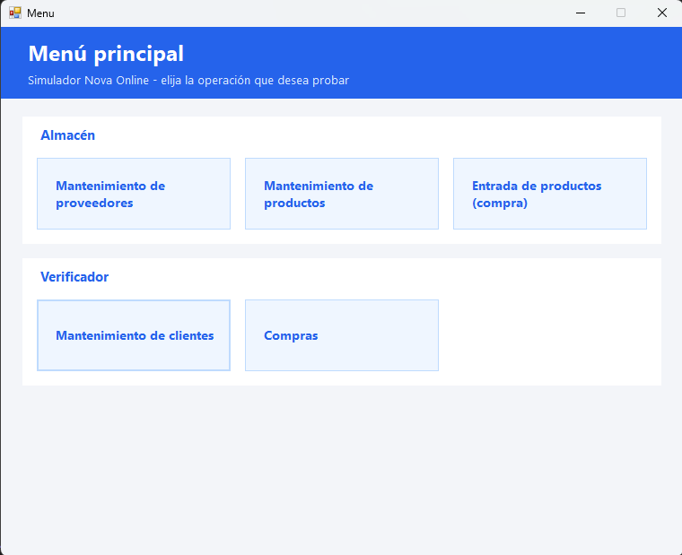
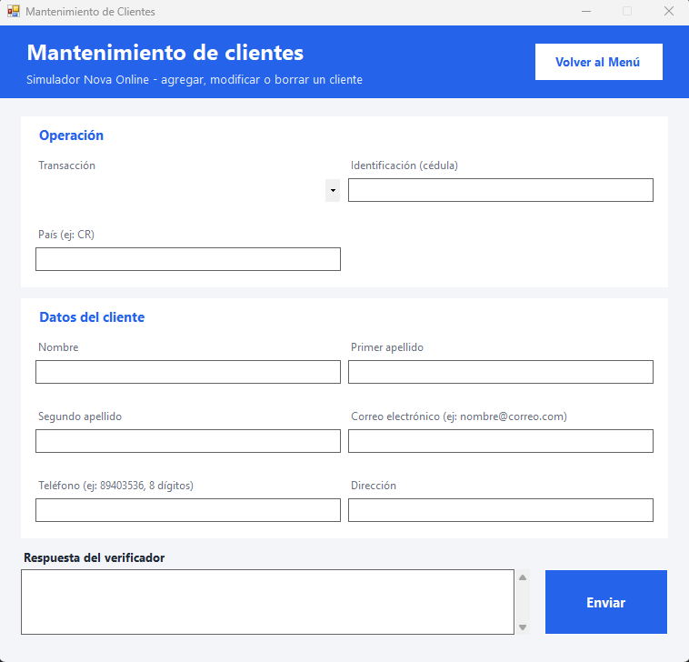
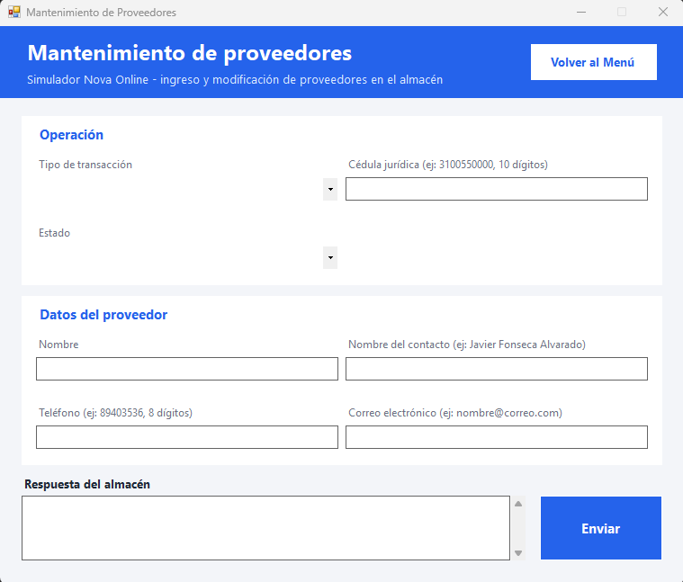
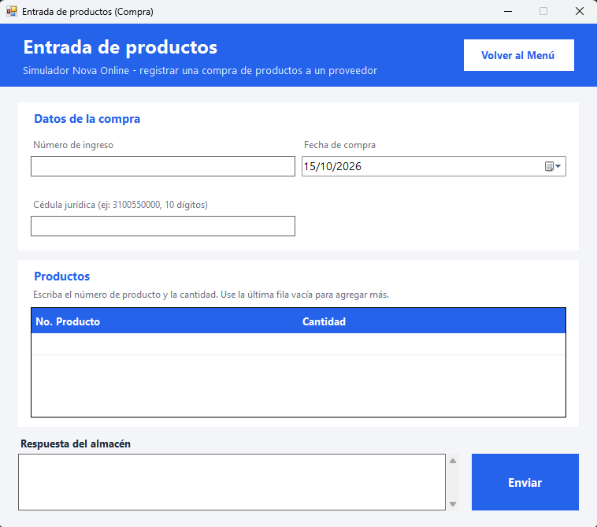

Proyecto 2: Sistema de Ventas y Distribución – Nova Online
Proyecto académico del curso Programación IV, Colegio Universitario de Cartago (III Cuatrimestre 2026). Equipo de 3 personas.
Descripción: Sistema distribuido que controla inventario y ventas. Tiene tres componentes que se comunican por sockets mediante tramas: un Verificador (clientes y compras), un Almacén (productos, proveedores e inventario) y un Simulador con interfaz gráfica.
Tecnologías del proyecto: Python, Java, C# (WinForms), MySQL, SQL Server, sockets TCP, JSON, procedimientos almacenados, multihilo, Git/GitHub.
Mi rol: Desarrollador backend del componente Verificador (Python + MySQL) y responsable de su base de datos.
Ver código en GitHubLo que desarrollé
- Servidor de sockets multihilo del Verificador, que atiende a cada cliente en su propio hilo.
- Diseño de la base de datos MySQL (clientes, compras y detalle) y sus procedimientos almacenados.
- Capa de acceso a datos, módulo de validaciones y scripts de pruebas automatizadas.
- Formato JSON de las tramas usado por el Simulador e integración con los demás componentes mediante Git.
Mis historias de usuario
Mantenimiento de clientes: agregar, modificar y borrar clientes, validando identificación, país (ISO), correo y teléfono. No permite borrar clientes con historial de compras.
Registro de compras: antes de guardar, consulta al Almacén por socket si hay inventario. La transacción (commit/rollback) se maneja en Python y un bloqueo entre hilos evita compras duplicadas cuando llegan al mismo tiempo.
Bitácora: registra cada trama recibida en JSON con fecha y hora, usando el patrón productor-consumidor (una cola y un hilo escritor independiente).
Capturas



